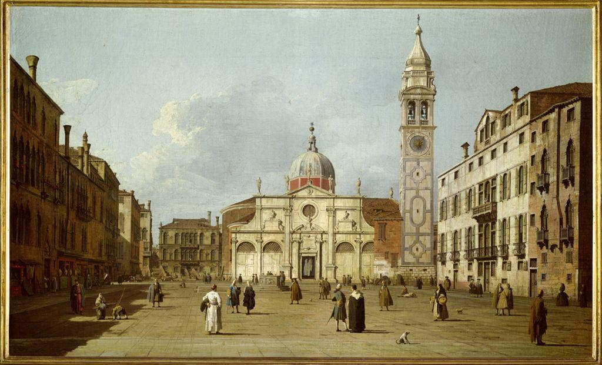

Here Canaletto stands you in the middle of a Venetian square, or campo. Notice how the paving stones seem to spread out beneath your feet and run back toward the church. Follow one edge of the pavement with your finger; it heads straight toward the far center of the scene.

Canaletto was a vedutista, a painter of vedute (detailed city views). He is thought to have used a drawing aid, a small viewing box with a lens and mirror, to trace the exact angles of the buildings before he painted. His spaces feel true because the perspective is measured, not guessed. The figures scattered across the square give you a scale to read the depth: the near people are large, the far ones are tiny, and that size difference alone tells your eye how far back the church stands.
Perspective is a tool, and a tool can be used to tell the truth or to lie beautifully. Compare an 18th-century Venetian who used it to record his city exactly with a 20th-century Dutch artist who used the very same rules to trap the eye in the impossible.
Canaletto painted Venice for travelers who wanted an accurate souvenir of the city, likely using optical drawing aids to fix his perspective before painting the light, water, and crowds from close study. In his views, linear perspective, relative size, and atmospheric haze all agree, so the space reads as convincingly real: perspective obeyed completely.
Escher learned perspective as precisely as any draftsman, then used it against itself. In prints like Convex and Concave and Ascending and Descending, each small area obeys perspective perfectly, yet the areas connect into a whole that could never be built: stairs climb forever and return to their start, a floor becomes a ceiling as your eye crosses it. The rules hold locally and break globally, on purpose.
Escher's prints are still under copyright, so we view them at the source rather than reproduce them here. Open each one and try to trace a single continuous path through the space. Watch how your eye keeps accepting each local room while the whole refuses to add up.
M. C. Escher, Convex and Concave (1955), at the National Gallery of ArtM. C. Escher, Ascending and Descending (1960), at the National Gallery of Art
Artists and critics read a work in a deliberate order so that judgment is earned, not blurted: describe, then analyze, then interpret, then judge. The rule is simple: you may not skip ahead. Here is that order applied to Canaletto's Campo Santa Maria Formosa above.
D · Describe (just the facts)
A wide paved square opens toward a domed church at the center. A tall bell tower with a clock rises on the right. Buildings line both sides. Small figures stand and walk across the pavement, larger in front and smaller toward the back.
A · Analyze (how is it built?)
The pavement lines act as orthogonals, angling back toward the distant center and pulling the eye deep into the space. Relative size in the figures measures the distance for us. The far buildings are slightly paler than the near ones, a touch of atmospheric perspective that pushes them back.
I · Interpret (what is it saying?)
This is a portrait of a place as much as of a moment. Canaletto wants you to feel the real scale and calm order of the square, as if you could cross it yourself. The precision is the point: it promises the viewer, this is exactly how Venice looks.
J · Judge (does it succeed?)
It succeeds. The depth is so convincing that the flat canvas nearly disappears. The measured perspective and the human-scale figures work together to make a space you believe you could walk into, which is exactly what a veduta sets out to do.
▶ In your notebook, write one Interpret sentence about Escher's endless staircase before you open this. Then compare.
Canaletto obeyed perspective to rebuild a real city; Escher obeyed it locally to build a world that cannot exist. Same rules, opposite goals. Once you know the rules, you get to choose which one you are: the builder of the believable, or the bender of it. The critique order is how you slow down and read either one.